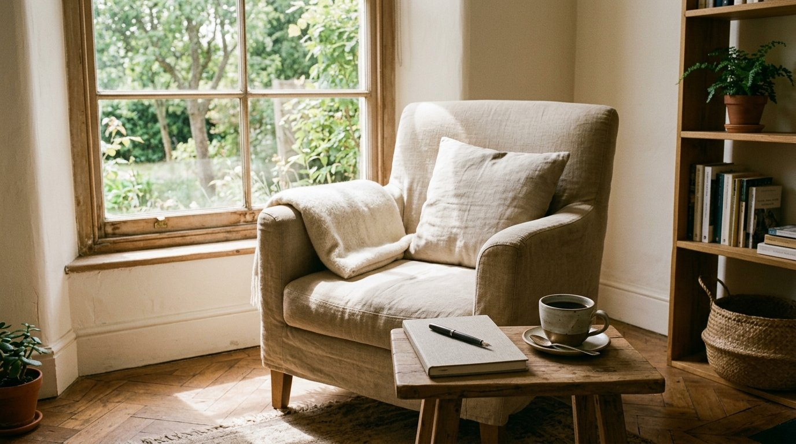

Aprender a no hacer nada sin sentirte culpable
Nos han educado para creer que cada minuto libre debe ser aprovechado, medido o monetizado. Cómo desarmar el juez interior de la productividad y reconquistar el placer elemental de parar.
Es un domingo a las cinco de la tarde. No tienes que fichar en el trabajo, no hay citas médicas en el horizonte y las tareas domésticas elementales están despachadas. Tienes por delante tres horas limpias y completamente tuyas.
En un mundo sano, te sentarías en una butaca a mirar por la ventana, te servirías una infusión caliente o simplemente cerrarías los ojos sintiendo el peso agradable de la tarde. Pero a los tres minutos exactos de reloj, un cosquilleo incómodo e invasivo empieza a trepar por tu estómago.
Una voz interna —severa, puntillosa y constante— empieza a susurrarte reproches: «¿Qué haces ahí sentado?, deberías poner una lavadora, ordenar el cajón de los cables, avanzar en el informe del martes o al menos ponerte un pódcast sobre economía para aprender algo útil».
De repente, el silencio se vuelve insoportable. Te levantas con el ceño fruncido y empiezas a pulular por la casa inventando faenas urgentes. Hemos llegado a un punto en el que el descanso pasivo nos aterra más que el propio agotamiento laboral.
La trampa del ocio de alto rendimiento
Nos han inoculado con tanta fuerza la religión de la productividad industrial que hemos colonizado hasta los últimos rincones de nuestro tiempo libre con la misma mentalidad de fábrica que usamos en la oficina.
Fíjate en cómo tratamos hoy nuestros descansos:
- Si salimos a caminar por el parque, nos ponemos un reloj que mide los pasos, las calorías quemadas y la zona cardíaca.
- Si leemos un libro, elegimos un ensayo técnico para «optimizar nuestras habilidades».
- Si preparamos la comida, lo llamamos batch cooking estratégico para maximizar los minutos del miércoles.
Ese ocio optimizado no es descanso: es trabajo encubierto con una pátina de desarrollo personal. Tu sistema nervioso jamás se desactiva porque sigue rindiendo cuentas ante un supervisor invisible.
La necesidad biológica del barbecho mental
En la agricultura tradicional, los campesinos dejan parcelas de tierra en barbecho durante un año entero. No lo hacen por dejadez ni pereza: lo hacen porque una tierra forzada sin descanso acaba convertida en polvo estéril.
Tu cerebro obedece a las mismas leyes biológicas. Cuando estás en reposo verdadero —lo que los neurocientíficos llaman la Red Neuronal por Defecto (DMN)— la mente no se apaga: se reconfigura. Ordena las memorias dispersas, limpia toxinas moleculares y conecta ideas que en mitad de la vorágine diaria jamás se habrían cruzado.
Las mejores decisiones y los descubrimientos más lúcidos nunca aparecen mientras estás tachando renglones en una lista interminable; aparecen cuando tienes el valor de parar y dejar que el polvo se asiente.

Tres hábitos sobrios para apagar el juez interior
Para recuperar el placer de no hacer nada sin que la culpa te carcoma por dentro, no necesitas retirarte a un monasterio. Basta con establecer fronteras claras entre la acción y el descanso:
1. Declara bloques oficiales de «tiempo sagradamente inútil»
Si la culpa te ataca con la lógica del deber, usa su propia trampa: agenda en tu planificador dos horas de nada oficial. Al verlo escrito sobre el papel, tu cerebro racional lo interpreta como un compromiso pactado y no como una negligencia. Durante ese bloque, todo está permitido excepto producir, medir o intentar ser eficiente.
2. Desconecta los contadores y las métricas
Sal a dar una vuelta sin auriculares en los oídos y sin reloj digital en la muñeca. Siéntate en un banco a mirar las hojas de los árboles o la gente que camina por la acera. Aprende a tolerar la bendita ausencia de datos sobre tu rendimiento. La vida se experimenta; no se audita en una hoja de cálculo.
3. El cuaderno como tapón contra las urgencias artificiales
Si en mitad de tu rato de descanso la cabeza empieza a bombardearte con recordatorios impertinentes («tienes que cambiar la bombilla del pasillo, tienes que renovar el seguro»), no discutas con ella. Coge un lápiz, anota esas dos frases en un cuaderno físico para el martes por la tarde y cierra la tapa. Como comprobamos al analizar la trampa de las listas infinitas, lo que está guardado en un soporte físico con límites ya no tiene permiso para asaltarte en tu tiempo de descanso.
El descanso es una conquista cotidiana
Reclamar el derecho a no hacer nada en una sociedad adicta a la prisa no es debilidad: es un acto de resistencia íntima.
Este fin de semana, cuando la inercia te empuje a buscar otra tarea innecesaria, respira hondo y quédate donde estás. Apoya la cabeza en el respaldo, suelta los hombros y permítete sencillamente estar vivo. El mundo seguirá girando sin tu permiso durante las próximas dos horas; y tú despertarás mucho más entero.
¿Te cuesta poner freno a las semanas aceleradas y encontrar margen para respirar?
Organiza tus días con claridad visual, visión panorámica y espacio real para lo importante sin fechas rígidas que te aten. Descubre el Planificador Semanal Atemporal de Menos Ruido.